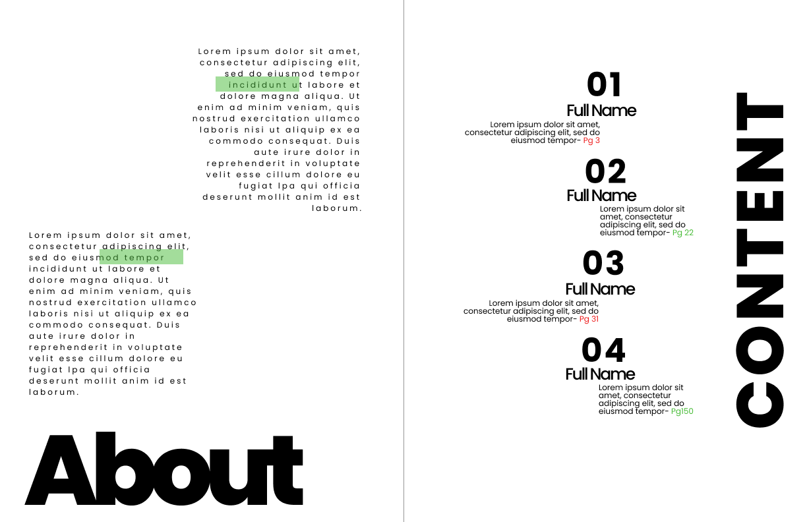
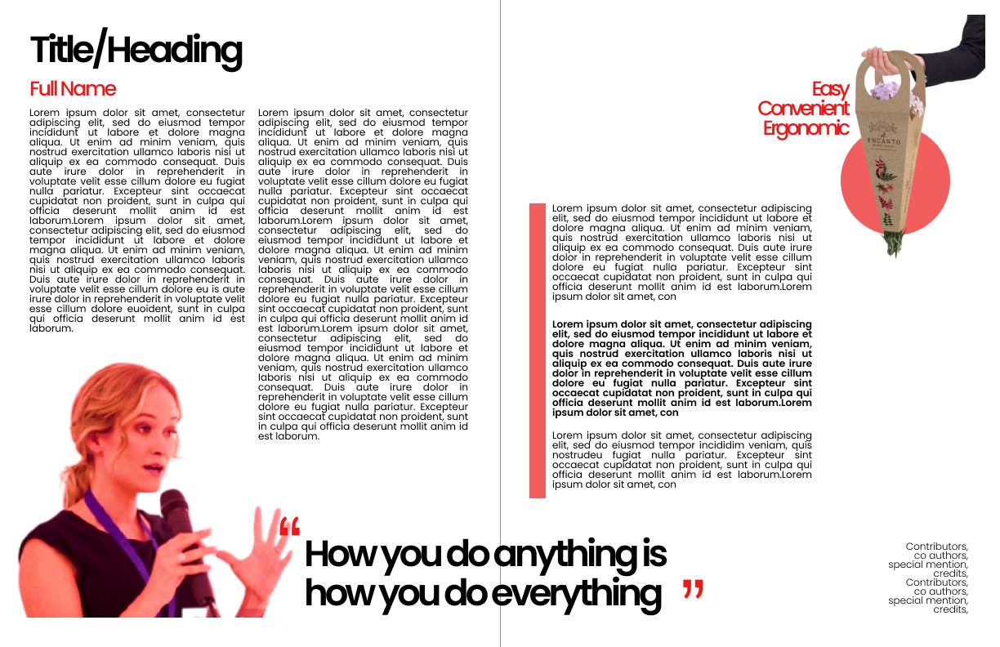

Interned under Dr. Vishal Singh to design and curate a 120+ page coffee table book for the Department of Design and Manufacturing's Silver Jubilee: 25 years of departmental history told through visual storytelling, editorial layout, and content curation.
Book structure: 5 chapters
IISc Dept. of Design & Manufacturing · Silver Jubilee Coffee Table Book · Oct 2024 – Mar 2025
Before any layout decisions were made, the project required deep research into 25 years of departmental history: work closer to archival research than typical design work.
Researched the founding story, evolution, and key milestones of the Department of Design and Manufacturing since inception. Worked from archival documents, past publications, and institutional records to build an accurate historical narrative across five decades of academic work.
Coordinated content collection from faculty and alumni spanning 25 years, gathering reflections, achievements, and personal stories. Managed multiple revision rounds while maintaining a consistent narrative voice across dozens of contributors with very different writing styles.
Built a single coherent narrative thread from fragmented, decades-old institutional material, turning disparate faculty contributions into a publication with a clear emotional and chronological arc.
Designed the full visual language of the publication, balancing the rigour expected of an academic institution with the warmth needed for a book meant to be enjoyed, not just referenced.
Established a typographic system and grid structure that could flex across content types: dense faculty bios, large-format photography spreads, and pull-quote moments, while maintaining visual consistency across 120+ pages. The system had to work for the academic scrutiniser and the casual alumni reader alike.
Designed with two audiences in mind: design academics who would scrutinise the rigour, and a broader audience (alumni, donors, prospective students) who needed an accessible entry point. Careful use of pull quotes, photography, and white space created breathing room in dense academic content.

About & Contents spread: grid structure for dense text alongside a full-bleed section divider

Feature profile spread: dual-column body text, photography, and a pull-quote moment
The grid system designed for this project allowed rapid, consistent layout of 120+ pages without sacrificing visual variety, robust enough to handle both dense text and full-bleed photography.
Delivered print-ready files to specification: a discipline distinct from screen design that requires close attention to physical production constraints.
Prepared final files accounting for bleed, trim, colour mode (CMYK conversion from RGB working files), and font embedding, ensuring zero production surprises at the printer. First hands-on experience with print production constraints distinct from the screen-first design work I'd done previously.
Print is unforgiving in a way screens aren't: there's no "ship a fix later." It forced a level of precision and proofing discipline that has made me more careful in digital design too.
Designing for an archive means making editorial judgement calls: what story to tell, what to leave out. It's design as authorship, not just arrangement.
First real exposure to print production constraints. A different muscle from digital design, and one I'm glad I built early.
Coordinating from dozens of faculty and alumni contributors taught me process: clear templates and deadlines matter as much as design skill.
Academic publications can feel cold. Finding the visual language that respected the institution's gravity while still feeling human was the core design challenge.
Questions about this role?